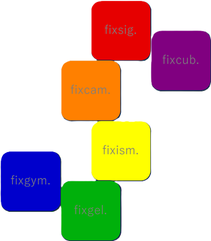

時間差に潜む価値を見つけ出し、創造の糧とするための探究視点です。
This is a centre for discovering the value hidden within time lags and turning it into fuel for creation.
まだ静かに芽吹いたばかりの場所ですが、少しずつ枝葉を広げてまいります。
Though newly sprouted and still quiet, this place shall gradually spread its branches and leaves.
当面のご連絡は、以下のアドレス宛にお願いいたします。
For the time being, please contact us at the following address:
contact@fixlag.org